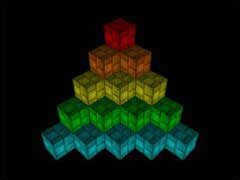

|
第12課 |
 |
|  |
顯示列表:
想知道如何加速你的OpenGL程序麼？這一課將告訴你如何使用OpenGL的顯示列表，它通過預編譯OpenGL命令來加速你的程序，並可以為你省去很多重複的代碼。 |
|
 |
 |
這次我將教你如何使用顯示列表，顯示列表將加快程序的速度，而且可以減少代碼的長度。
當你在製作遊戲裡的小行星場景時，每一層上至少需要兩個行星，你可以用OpenGL中的多邊形來構造每一個行星。聰明點的做法是做一個循環，每個循環畫出行星的一個面，最終你用幾十條語句畫出了一個行星。每次把行星畫到屏幕上都是很困難的。當你面臨更複雜的物體時你就會明白了。
那麼，解決的辦法是什麼呢？用現實列表，你只需要一次性建立物體，你可以貼圖，用顏色，想怎麼弄就怎麼弄。給現實列表一個名字，比如給小行星的顯示列表命名為「asteroid」。現在，任何時候我想在屏幕上畫出行星，我只需要調用glCallList(asteroid)。之前做好的小行星就會立刻顯示在屏幕上了。因為小行星已經在顯示列表裡建造好了，OpenGL不會再計算如何構造它。它已經在內存中建造好了。這將大大降低CPU的使用，讓你的程序跑的更快。
那麼，開始學習咯。我稱這個DEMO為Q-Bert顯示列表。最終這個DEMO將在屏幕上畫出15個立方體。每個立方體都由一個盒子和一個頂部構成，頂部是一個單獨的顯示列表，盒子沒有頂。
這一課是建立在第六課的基礎上的，我將重寫大部分的代碼，這樣容易看懂。下面的這些代碼在所有的課程中差不多都用到了。
|
|
|
下面設置變量。首先是存儲紋理的變量，然後兩個新的變量用於顯示列表。這些變量是指向內存中顯示列表的指針。命名為box和top。
然後用兩個變量xloop,yloop表示屏幕上立方體的位置，兩個變量xrot，yrot表示立方體的旋轉。
|
|
GLuint box; // 保存盒子的顯示列表
GLuint top; // 保存盒子頂部的顯示列表
GLuint xloop; // X軸循環變量
GLuint yloop; // Y軸循環變量
|
接下來建立兩個顏色數組 |
|
static GLfloat boxcol[5][3]= // 盒子的顏色數組
{
// 亮:紅，橙，黃，綠，藍
{1.0f,0.0f,0.0f},{1.0f,0.5f,0.0f},{1.0f,1.0f,0.0f},{0.0f,1.0f,0.0f},{0.0f,1.0f,1.0f}
};
static GLfloat topcol[5][3]= // 頂部的顏色數組
{
// 暗:紅，橙，黃，綠，藍
{.5f,0.0f,0.0f},{0.5f,0.25f,0.0f},{0.5f,0.5f,0.0f},{0.0f,0.5f,0.0f},{0.0f,0.5f,0.5f}
};
|
現在正式開始建立顯示列表。你可能注意到了，所有創造盒子的代碼都在第一個顯示列表裡，所有創造頂部的代碼都在另一個列表裡。我會努力解釋這些細節。
|
|
GLvoid BuildLists() // 創建盒子的顯示列表
{
|
開始的時候我們告訴OpenGL我們要建立兩個顯示列表。glGenLists(2)建立了兩個顯示列表的空間，並返回第一個顯示列表的指針。「box」指向第一個顯示列表，任何時候調用「box」第一個顯示列表就會顯示出來。
|
|
box=glGenLists(2); // 創建兩個顯示列表的名稱
|
現在開始構造第一個顯示列表。我們已經申請了兩個顯示列表的空間了，並且有box指針指向第一個顯示列表。所以現在我們應該告訴OpenGL要建立什麼類型的顯示列表。
我們用glNewList()命令來做這個事情。你一定注意到了box是第一個參數，這表示OpenGL將把列表存儲到box所指向的內存空間。第二個參數GL_COMPILE告訴OpenGL我們想預先在內存中構造這個列表，這樣每次畫的時候就不必重新計算怎麼構造物體了。
GL_COMPILE類似於編程。在你寫程序的時候，把它裝載到編譯器裡，你每次運行程序都需要重新編譯。而如果他已經編譯成了.exe文件，那麼每次你只需要點擊那個.exe文件就可以運行它了，不需要編譯。當OpenGL編譯過顯示列表後，就不需要再每次顯示的時候重新編譯它了。這就是為什麼用顯示列表可以加快速度。 |
|
glNewList(box,GL_COMPILE); // 創建第一個顯示列表
|
下面這部分的代碼畫出一個沒有頂部的盒子，它不會出現在屏幕上，只會存儲在顯示列表裡。
你可以在glNewList()和glEngList()中間加上任何你想加上的代碼。可以設置顏色，貼圖等等。唯一不能加進去的代碼就是會改變顯示列表的代碼。顯示列表一旦建立，你就不能改變它。
比如你想加上glColor3ub(rand()%255,rand()%255,rand()%255)，使得每一次畫物體時都會有不同的顏色。但因為顯示列表只會建立一次，所以每次畫物體的時候顏色都不會改變。物體將會保持第一次建立顯示列表時的顏色。
如果你想改變顯示列表的顏色，你只有在調用顯示列表之前改變顏色。後面將詳細解釋這一點。 |
|
glBegin(GL_QUADS); // 開始繪製四邊形
// 底面
glTexCoord2f(1.0f, 1.0f); glVertex3f(-1.0f, -1.0f, -1.0f);
glTexCoord2f(0.0f, 1.0f); glVertex3f( 1.0f, -1.0f, -1.0f);
glTexCoord2f(0.0f, 0.0f); glVertex3f( 1.0f, -1.0f, 1.0f);
glTexCoord2f(1.0f, 0.0f); glVertex3f(-1.0f, -1.0f, 1.0f);
// 前面
glTexCoord2f(0.0f, 0.0f); glVertex3f(-1.0f, -1.0f, 1.0f);
glTexCoord2f(1.0f, 0.0f); glVertex3f( 1.0f, -1.0f, 1.0f);
glTexCoord2f(1.0f, 1.0f); glVertex3f( 1.0f, 1.0f, 1.0f);
glTexCoord2f(0.0f, 1.0f); glVertex3f(-1.0f, 1.0f, 1.0f);
// 後面
glTexCoord2f(1.0f, 0.0f); glVertex3f(-1.0f, -1.0f, -1.0f);
glTexCoord2f(1.0f, 1.0f); glVertex3f(-1.0f, 1.0f, -1.0f);
glTexCoord2f(0.0f, 1.0f); glVertex3f( 1.0f, 1.0f, -1.0f);
glTexCoord2f(0.0f, 0.0f); glVertex3f( 1.0f, -1.0f, -1.0f);
// 右面
glTexCoord2f(1.0f, 0.0f); glVertex3f( 1.0f, -1.0f, -1.0f);
glTexCoord2f(1.0f, 1.0f); glVertex3f( 1.0f, 1.0f, -1.0f);
glTexCoord2f(0.0f, 1.0f); glVertex3f( 1.0f, 1.0f, 1.0f);
glTexCoord2f(0.0f, 0.0f); glVertex3f( 1.0f, -1.0f, 1.0f);
// 左面
glTexCoord2f(0.0f, 0.0f); glVertex3f(-1.0f, -1.0f, -1.0f);
glTexCoord2f(1.0f, 0.0f); glVertex3f(-1.0f, -1.0f, 1.0f);
glTexCoord2f(1.0f, 1.0f); glVertex3f(-1.0f, 1.0f, 1.0f);
glTexCoord2f(0.0f, 1.0f); glVertex3f(-1.0f, 1.0f, -1.0f);
glEnd(); // 四邊形繪製結束
|
用glEngList()命令，我們告訴OpenGL我們已經完成了一個顯示列表。在glNewList()和glEngList()之間的任何東西就是顯示列表的一部分。
|
|
glEndList(); // 第一個顯示列表結束
|
現在我們來建立第二個顯示列表。在上一個顯示列表的指針上加1，就得到了第二個顯示列表的指針。第二個顯示列表的指針命名為「top」。
|
|
top=box+1; // 第二個顯示列表的名稱
|
現在我們知道了第二個顯示列表的指針，我們可以建立它了。
|
|
glNewList(top,GL_COMPILE); // 盒子頂部的顯示列表
|
下面的代碼畫出盒子的頂部。 |
|
glBegin(GL_QUADS); // 開始繪製四邊形
// 上面
glTexCoord2f(0.0f, 1.0f); glVertex3f(-1.0f, 1.0f, -1.0f);
glTexCoord2f(0.0f, 0.0f); glVertex3f(-1.0f, 1.0f, 1.0f);
glTexCoord2f(1.0f, 0.0f); glVertex3f( 1.0f, 1.0f, 1.0f);
glTexCoord2f(1.0f, 1.0f); glVertex3f( 1.0f, 1.0f, -1.0f);
glEnd(); // 結束繪製四邊形
|
然後告訴OpenGL第二個顯示列表建立完畢。 |
|
glEndList(); // 第二個顯示列表創建完畢
}
|
貼圖紋理的代碼和之前教程裡的代碼是一樣的。我們需要一個可以貼在立方體上的紋理。我決定使用mipmapping處理讓紋理看上去光滑，因為我討厭看見像素點。紋理的文件名是「cube.bmp」，存放在data目錄下。
|
|
if (TextureImage[0]=LoadBMP("Data/Cube.bmp"))
|
改變窗口大小的代碼和第六課是一樣的。
初始化的代碼只有一點改變，加入了一行BuildList()。請注意代碼的順序，先讀入紋理，然後建立顯示列表，這樣當我們建立顯示列表的時候就可以將紋理貼到立方體上了。
|
|
BuildLists(); // 創建顯示列表
|
接下來的三行使燈光有效。Light0一般來說是在顯卡中預先定義過的，如果Light0不工作，把下面那行註釋掉好了。
最後一行的GL_COLOR_MATERIAL使我們可以用顏色來貼紋理。如果沒有這行代碼，紋理將始終保持原來的顏色，glColor3f(r,g,b)就沒有用了。總之這行代碼是很有用的。 |
|
glEnable(GL_LIGHT0); // 使用默認的0號燈
glEnable(GL_LIGHTING); // 使用燈光
glEnable(GL_COLOR_MATERIAL); // 使用顏色材質
|
現在到了繪製代碼的地方了，我們還是和以前一樣，以清除背景顏色為開始。
接著把紋理綁定到立方體，我可以把這些代碼加入到顯示列表中，但我還是把它留在了顯示列表外邊，這樣我可以隨便設置紋理。
|
|
int DrawGLScene(GLvoid) // 繪製操作開始
{
glClear(GL_COLOR_BUFFER_BIT | GL_DEPTH_BUFFER_BIT); // 清除背景顏色
glBindTexture(GL_TEXTURE_2D, texture[0]); // 選擇紋理
|
現在到了真正有趣的地方了。用一個循環，循環變量用於改變Y軸位置，在Y軸上畫5個立方體，所以用從1到5的循環。
|
|
for (yloop=1;yloop<6;yloop++) // 沿Y軸循環
{
|
另外用一個循環，循環變量用於改變X軸位置。每行上的立方體數目取決於行數，所以循環方式如下。
|
|
for (xloop=0;xloop<yloop;xloop++) // 沿X軸循環
{
|
重置模型變化矩陣 |
|
glLoadIdentity(); // 重置模型變化矩陣
|
邊的代碼是移動和旋轉當前坐標系到需要畫出立方體的位置。（原文有很囉嗦的一大段，相信大家的數學功底都不錯，就不翻譯了）
|
|
// 設置盒子的位置
glTranslatef(1.4f+(float(xloop)*2.8f)-(float(yloop)*1.4f),((6.0f-float(yloop))*2.4f)-7.0f,-20.0f);
glRotatef(45.0f-(2.0f*yloop)+xrot,1.0f,0.0f,0.0f);
glRotatef(45.0f+yrot,0.0f,1.0f,0.0f);
|
然後在正式畫盒子之前設置顏色。每個盒子用不同的顏色。 |
|
glColor3fv(boxcol[yloop-1]);
|
好了，顏色設置好了。現在需要做的就是畫出盒子。不用寫出畫多邊形的代碼，只需要用glCallList(box)命令調用顯示列表。盒子將會用glColor3fv()所設置的顏色畫出來。 |
|
glCallList(box); // 繪製盒子
|
然後用另外的顏色畫頂部。搞定。 |
|
glColor3fv(topcol[yloop-1]); // 選擇頂部顏色
glCallList(top); // 繪製頂部
}
}
return TRUE; // 成功返回
}
|
下面的代碼是鍵盤控制的一些東西 |
|
SwapBuffers(hDC); // 交換緩存
if (keys[VK_LEFT]) // 左鍵是否按下
{
yrot-=0.2f; // 如果是，向左旋轉
}
if (keys[VK_RIGHT]) // 右鍵是否按下
{
yrot+=0.2f; // 如果是向右旋轉
}
if (keys[VK_UP]) // 上鍵是否按下
{
xrot-=0.2f; // 如果是向上旋轉
}
if (keys[VK_DOWN]) // 下鍵是否按下
{
xrot+=0.2f; // 如果是向下旋轉
}
|
 |
版權與使用聲明:
我是個對學習和生活充滿激情的普通男孩,在網絡上我以DancingWind為暱稱，我的聯繫方式是zhouwei02@mails.tsinghua.edu.cn，如果你有任何問題，都可以聯繫我。
引子
網絡是一個共享的資源，但我在自己的學習生涯中浪費大量的時間去搜索可用的資料，在現實生活中花費了大量的金錢和時間在書店中尋找資料，於是我給自己起了個暱稱DancingWind，其意義是想風一樣從各個知識的站點中吸取成長的養料。在飄蕩了多年之後，我決定把自己收集的資料整理為一個統一的資源庫。
版權聲明
所有DancingWind發表的內容，大多都來自共享的資源，所以我沒有資格把它們據為己有，或聲稱自己為這些資源作出了一點貢獻。故任何人都可以複製，修改，重新發表，甚至以自己的名義發表，我都不會追究，但你在做以上事情的時候必須保證內容的完整性，給後來的人一個完整的教程。最後，任何人不能以這些資料的任何部分，謀取任何形式的報酬。
發展計劃
在國外，很多資料都是很多人花費幾年的時間慢慢積累起來的。如果任何人有興趣與別人共享你的知識，我很歡迎你與我聯繫，但你必須同意我上面的聲明。
感謝
感謝我的母親一直以來對我的支持和在生活上的照顧。
感謝我深愛的女友田芹，一直以來默默的在精神上和生活中對我的支持，她甚至把買衣服的錢都用來給我買書了，她真的是我見過的最好的女孩，希望我能帶給她幸福。
資源下載:
文檔 網頁格式
PDF格式
源碼 RAR格式 |
|
|